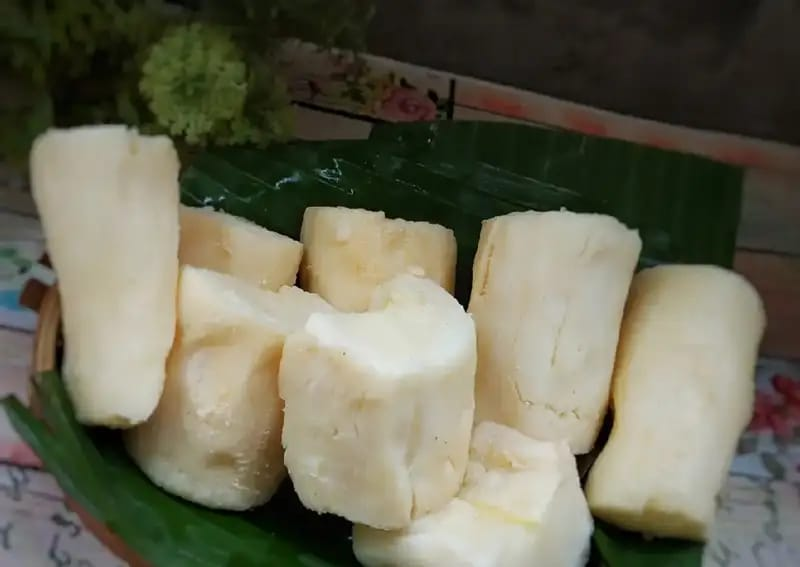

Peuyeum
Peuyeum merupakan olahan singkong yang difermentasi dan memiliki cita rasa yang khas. Cukup mudah untuk membuat dan mengolah peuyeum. Cara membuat peuyeum adalah dengan menyiapkan bahan dasar singkong, air, dan ragi.

(Sumber: www.orami.co.id)
Back